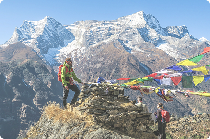
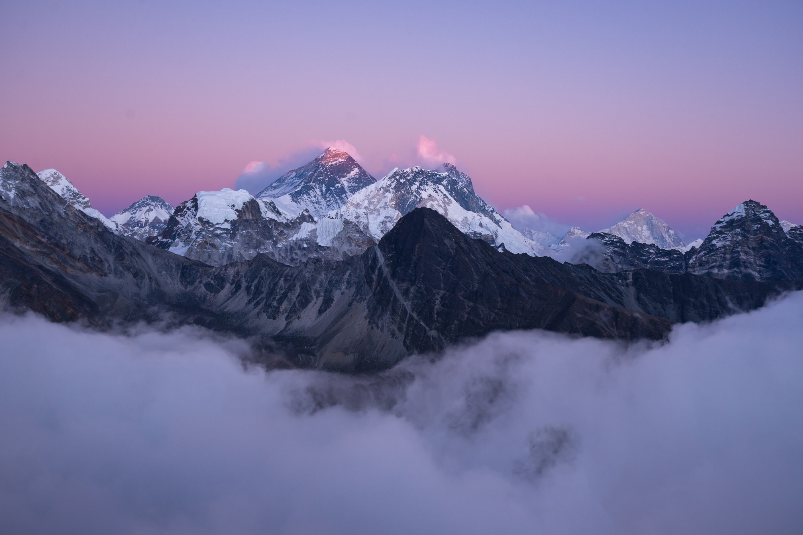

All Blogs
All Categories
Popular Treks
Everest Region
Langtang Region
Manaslu Region
Shey
Phoksundo National Park
Apr 20, 2026
Uncategorized
Shey Phoksundo National Park is one
of the most breathtaking and least explored regions in the regions in theregions in the...
Read
More
Best Time
for Mardi Himal Trek
Apr 20, 2026
Uncategorized
Best Time for Mardi Himal Trek –
Complete Guide with Viewpoints, Places & Mardi Himal Peak. The Mardi Himal Trek is one
of Nepal's...
Read
More
Safety
Tips for Manaslu Circuit
Trek
Apr 19, 2026
Uncategorized
Safety Tips for Manaslu Circuit Trek.
Complete Guide for a Safe Himalayan Journey Safety is a critical aspect of planning the
Manaslu Circuit...
Read
More
Kyanjin
Ri Viewpoint
Apr 19, 2026
Uncategorized
Kyanjin Ri Viewpoint. Panorama in
Langtang Valley The Kyanjin Ri viewpoint is one of the most breathtaking highlights...
Read
More

Mu Gompa
in Tsum Valley
Apr 17, 2026
Uncategorized
Mu Gompa in Tsum Valley. A Haven of
Culture, Spirituality, and Timeless Beauty featured in one of Nepal's most remote...
Read
More
Where is
Everest Located
Apr 10, 2026
Uncategorized
Where is Everest Located. If you're
ever wondered where Everest is located, you're not alone. This question is the most
searched for trekkers...
Read
More

Kanchenjunga
Apr 01, 2026
Uncategorized
Kanchenjunga. The third-highest
mountain in the world. Kanchenjunga is one of the most explored regions in theregions in theregions in theregions in the...
Read
More
Best time
to Visit the Langtang
Valley Trek
Mar 27, 2026
Uncategorized
Best Time to Visit the Langtang
Valley Trek is during spring (March to May) and autumn (September to November), when the
weather...
Read
More
Best Time
for Manaslu Circuit
Trek
Mar 25, 2026
Uncategorized
Best Time for Manaslu Circuit Trek is
during spring (March to May) and autumn (September to November), when the weather
remains...
Read
More
1
2
3
...
14
Next